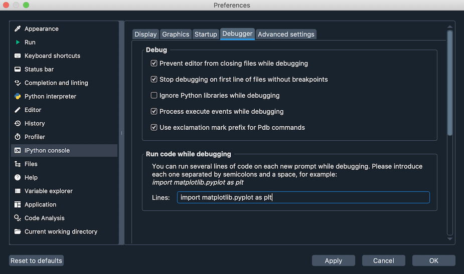

Debugger#
Debugging in Spyder is supported through integration with the enhanced ipdb debugger in the IPython Console.
This allows breakpoints and the execution flow to be viewed and controlled right from the Spyder GUI, as well as with all the familiar IPython console commands.

Debugging with ipdb#
You can fully control debugger execution from the Debug menu, Debug toolbar and via configurable keyboard shortcuts, along with the standard ipdb console commands.

Additionally, the Editor shows the line of code the debugger is currently stopped on with an arrow.
Spyder’s debugger offers syntax highlighting, code completion and command history, which work exactly like they do in the normal interactive interpreter.
Use the up and down arrows to recall previous commands, and press Tab to trigger autocomplete suggestions.

Furthermore, IPython’s magic functions are available in debugging mode.
You can, for example, run %ls to list the contents of your current working directory or %timeit to check how fast a given snippet of code is.

Finally, you can enter and execute multiline statements in Spyder’s debugger just like with the regular IPython prompt, to easily run complex code.

Breakpoints#
Spyder’s debugger is integrated with the Breakpoints pane, which lists the file, line, and condition (if any) of every breakpoint defined. To open it, select , or press Ctrl-Shift-B (Cmd-Shift-B on macOS).

There are several different ways to set and clear breakpoints:
With the Set/clear breakpoint option in the Debug menu.
Through pressing the configurable keyboard shortcut (F12 for normal, or Shift-F12 for conditional breakpoints by default).
By clicking to the left of the line number in an open file in the Editor (adding Shift for a conditional breakpoint).
With the
breakpoint()builtin function in your code.Interactively, using the
bcommand in a debugging session.
You can access and edit local and global variables at each breakpoint through the Variable Explorer.

Advanced features#
You can avoid stepping through other Python packages while debugging by enabling the new Ignore Python libraries while debugging option in Spyder’s preferences, under . This will skip all the built-in and third-party Python modules you have installed.

If your code has variables with the same names as Pdb commands (e.g. b or step), you can still refer to them as normal while debugging.
To call the respective Pdb command, just add an exclamation point before it (e.g. !b or !step).
You can have Spyder automatically execute a custom snippet of code every time the debugger stops. For example, you can use this to set specific variables, or import commonly-used modules so they are always available while debugging. To set this up, go to , and enter the code that you want to be executed with each step.
Matplotlib support#
Generating Matplotlib figures is fully supported while the debugger is active, including all the different graphics backends.
Use the %matplotlib magic to change to an interactive backend (e.g. %matplotlib qt5) to pan, zoom and adjust your plots in a separate window, or switch back to the default inline (%matplotlib inline) to see them displayed right in the Plots pane.

To avoid showing plots while debugging, deactivate the Process execute events while debugging option in .